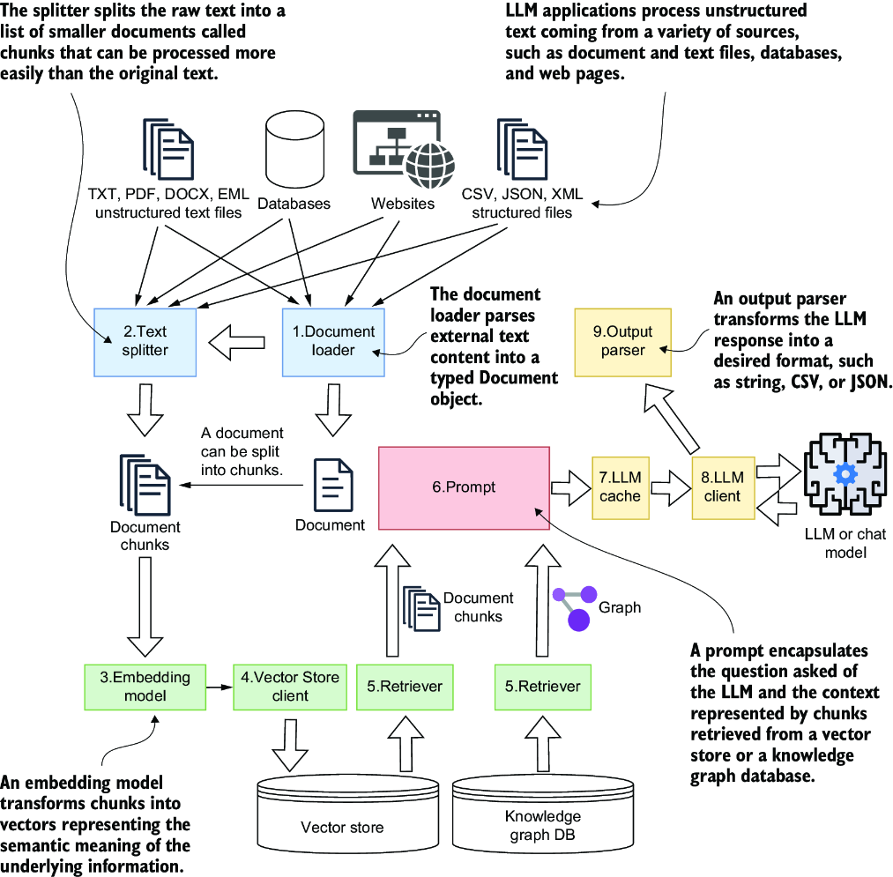

诸如GPT、Gemini和Claude等大语言模型（LLMs）已从新兴技术演变为不可或缺的基础设施。这些模型使应用程序能够回答复杂问题、生成个性化内容、总结长篇文档，并协调跨系统的多重操作。近年来，大语言模型更催生了一类新型应用——AI智能体。AI智能体以自然语言为输入，自主判断调用哪些工具或服务，协调多步骤工作流，并以清晰、符合人类习惯的友好方式返回结果。
AI应用与智能体系统往往结构复杂，需高效摄入与管理数据、精准构建提示词、可靠地串联模型调用，并无缝集成外部API与服务。幸运的是，LangChain、LangGraph和LangSmith等框架提供了模块化构建单元，能够消除冗余代码、提升最佳实践，使开发者得以聚焦于应用逻辑本身，而非底层连接的繁琐实现。在本书中，你将学习如何运用最前沿的工具与框架，设计、构建并规模化部署真实的基于大语言模型的应用与智能体系统。
大语言模型（LLMs）在处理自然语言方面表现出色——它们能够理解文本、生成内容，并在需要时精准提取信息。这使得它们广泛适用于多种应用场景，如文本摘要、语言翻译、情感分析、语义搜索、聊天机器人和代码生成。正因如此，如今大语言模型已深入到教育、医疗、法律和金融等多个领域。
尽管应用场景多种多样，大多数大语言模型（LLM）应用在底层架构上却高度相似：它们接收自然语言输入，处理非结构化数据，从一个或多个来源引入额外上下文，最终将所有信息封装为提示词，交由大模型来处理。从宏观上看，这类系统通常可分为三大类：
在深入探讨LangChain如何支持这三类系统的开发之前，我们将逐一剖析上述每种类型，首先从基于大语言模型的应用与引擎开始。
基于大语言模型的应用作为后端工具，专为其他系统处理特定的自然语言请求。例如，摘要生成引擎能够将冗长的文本段落压缩为精炼的摘要；这些摘要可立即返回给客户端，也可存入数据库，供其他应用程序后续使用，如图1.1所示。
摘要生成引擎通常作为共享服务部署，通过 REST API 向多个系统按需提供能力。另一种常见类型是问答（Q&A）引擎，它基于知识库响应用户查询。问答引擎的工作分为两个阶段：数据摄入与查询。
在内容摄入阶段，引擎通过提取文本、将其切分为片段，并将这些片段转换为嵌入向量——即能够捕捉语义的数学向量——来构建其知识库。这些嵌入向量与原始文本片段一同存储于向量存储中，以实现高效检索。若你对嵌入模型或向量存储等术语尚不熟悉，无需担忧，后续将详细讲解。现阶段，只需将此步骤理解为：将原始文本转化为可搜索的语义表示形式。
定义 嵌入是单词、标记或更大文本单元（如句子、段落或文档块）的向量表示，它们被映射到一个连续的高维空间（通常具有数百或数千个维度）。这些向量捕获了语义和句法关系，使语言模型能够理解含义、上下文和相似性。嵌入通常在预训练阶段学习，模型在大规模文本语料库上进行训练，以根据周围上下文预测标记。通过编码单个单词和更广泛的语义含义，嵌入实现了更有效的推理、检索和语言理解。
在查询阶段，引擎接收用户的问题，使用相同的模型将其转换为嵌入向量，并在向量存储库中进行语义搜索。它检索最相关的文本块，并将其与原始问题结合形成提示，随后发送给大语言模型。模型接着利用问题和检索到的上下文生成答案，旨在确保答案准确且基于所提供的来源——尽管结果质量最终取决于检索相关性、分块策略以及模型行为等因素。
这种工作流程被称为检索增强生成（RAG），如图1.2所示。RAG已迅速成为现代大语言模型应用的基石。它是一种基础技术，旨在使大语言模型的输出更有用、更及时，并基于相关的外部信息。
定义 检索增强生成 (RAG)是一种设计模式，其中大语言模型的文本生成通过融入额外的上下文得到增强，这些上下文在查询时从本地知识库（通常存储在向量存储中）检索而来。

引擎不仅限于问答功能。它们还能通过执行预定义的步骤序列（通常称为链）来调用外部工具。例如，处理用户请求的引擎可能会将自然语言指令转换为API调用，从外部系统提取数据，然后利用大语言模型来解读结果，并以清晰、易于人类阅读的格式呈现。
这些引擎的核心设计目标是用于系统级工作：自动化流程、智能处理数据以及整合不同平台。它们通过处理那些繁琐的部分——检索、转换、编排——来简化涉及自然语言的工作流，从而让您无需亲自操劳。
稍后我们将看到，AI智能体基于这些能力构建，不过“决策制定”的所在位置会有所不同。引擎通常执行预定义的链条：步骤和分支逻辑大多预先设计，系统针对给定请求运行该工作流直至完成。相比之下，智能体则利用大语言模型在运行时规划和调整其方法——选择调用哪些工具、根据中间结果修订其计划，并可能循环执行多个操作，直到达到停止条件。简而言之：引擎运行工作流，而智能体管理工作流，在开放式的多步骤任务中，以牺牲部分可预测性为代价换取更大的灵活性。
一旦人类开始直接与系统进行实时交互，游戏规则就改变了。此时，引擎承担起对话角色，从纯粹的自动化转向对话交流。这正是聊天机器人发挥作用的地方。
基于大语言模型的聊天机器人扮演着智能助手的角色，能够与语言模型进行持续、自然的对话。与简单的问答脚本不同，这类系统旨在确保交互既实用又安全。它们严重依赖于提示词设计：清晰的指令塑造模型的行为，并有助于防止无关、不准确或不安全的回复。现代聊天API——例如OpenAI所提供的那些——支持基于角色的消息格式（系统、用户、助手），它允许您定义助手的个性特征，并在整个对话中强制维持一致的行为。
为了提高准确性，聊天机器人通常会从本地知识源（如向量数据库）中提取事实性上下文。这使得它们能够将对话流畅性与特定领域的基础知识相结合，从而确保回答不仅流畅，而且相关又可靠。
聊天机器人的一个关键优势在于对话记忆。通过追踪先前的对话轮次，它们能够保持响应的连贯性和个性化。这种记忆受限于模型的上下文窗口。使用更大的上下文窗口会有所改善，但许多系统仍会压缩或总结对话历史，以保持在限制范围内——同时也是为了控制成本。
基于大语言模型的聊天机器人通常专用于摘要生成、问答或翻译等任务。它们可以直接响应用户输入，也可以结合存储的知识进行处理。例如，摘要聊天机器人的架构（图1.3）建立在基础摘要生成引擎之上，但增加了对话管理和上下文感知层。

摘要生成引擎与摘要聊天机器人的关键区别在于交互性。聊天机器人允许你实时优化响应：如果你想要更简短或更随意的摘要，只需提出要求即可，如图1.4中的时序图所示。

这种一来一回的互动使得整个过程具有协作性—从而产生更贴合需求、更具情境感知的答案。在下一章中，我们将深入探讨角色指令、少样本示例以及高级提示词工程，让您能更好地控制聊天机器人的行为和输出。
AI智能体是一种与大语言模型协同工作的系统，用于执行多步骤任务——通常涉及多个数据源、分支逻辑和自适应决策。与简单的流水线不同，智能体具备一定程度的自主性：它们遵循您设定的约束条件，但会自主决定下一步该做什么。
在每个步骤中，智能体都会咨询大语言模型来决定使用哪些工具，然后运行这些工具，并在继续之前处理结果。这个循环会持续进行，直到智能体产生一个完整的解决方案。在实战中，这可能意味着从结构化来源（例如，数据库或API）和非结构化来源（例如，文档或网页）中提取信息，合并结果，并以连贯的格式呈现它们。
考虑以下示例：一家旅行社使用AI智能体根据预订网站的自然语言请求生成度假套餐。如图1.5所示，该流程可能如下所示：

在生成最终输出（例如一份完整的假期计划）之前，工作流可能涉及智能体与大语言模型之间的多次迭代。此外，图1.5所示的架构仅是一种可能性。另一种可选设计方案可以基于一组更细粒度的智能体，并由顶层的监督者智能体进行协调。
在高风险领域，如金融或医疗，通常包含一个人工介入步骤。这确保了在最终确定关键行动之前，人类可以审查和验证这些行动——例如批准金融交易或确认复杂的医疗建议。在假期规划示例中，可以编程让智能体在将拟定行程发送给客户之前暂停并请求人工批准，从而增加一层额外的监督和信任。
AI智能体领域关注度激增，无论是OpenAI、谷歌、亚马逊等主要参与者，还是LangChain、LlamaIndex、Pydantic等独立开发者，都纷纷发布智能体SDK以推动该技术的更广泛应用。
在本书中，我们将重点介绍LangGraph，它是LangChain的专用智能体框架。LangGraph提供了预构建的智能体和编排器类，以及开箱即用的工具集成，因此您无需重复造轮子。您还可以通过LangGraph获得构建高级智能体的实战经验，以及学习如何在实战中设计、编排和优化它们。
在许多方面，AI智能体代表了基于大语言模型应用的最先进形式。它充分利用大语言模型的全方位能力——理解、生成和文本推理——来驱动复杂的自动化工作流程。智能体能够根据您设计的提示词，动态选择并使用多种工具，这使得它们在金融、医疗和物流等领域极具价值，因为多步推理和数据整合在这些领域至关重要。
随着Anthropic推出模型上下文协议（MCP），智能体的关注度进一步激增。MCP定义了一项标准，使服务能够通过MCP服务器暴露一些工具，智能体可以通过MCP客户端访问这些工具，其便捷程度如同访问本地组件。这将集成负担转移到了服务本身，使开发者能够专注于构建强大的智能体，而非维护自定义连接器。自2024年末发布以来，MCP迅速成为事实标准——已被OpenAI和Google等主要大语言模型提供商采纳——如今已有数以千计的工具可通过公共MCP门户访问。在本书中，您将学习该协议的工作机制，在实战中考察其生态系统，并构建您自己的MCP服务器，使其可以直接与智能体应用程序集成。
想象一下，你被要求构建一个能够根据公司文档回答客户问题的聊天机器人，或者一个能从数千份内部报告中检索精确答案的搜索引擎。很快你就会发现如下几个相同的痛点：
在没有框架可用的情况下，开发者最终会重新实现相同的管道加载数据，然后分割、嵌入、存储、检索并构造提示词——一遍又一遍。这种重复正是导致难以可靠地将专有数据引入模型的原因，既避免了提示词信息过载，也防止提示词、链和集成变成难以维护的混乱状态。您还需要在上下文限制、成本与答案质量之间取得平衡。LangChain通过提供一套一致的构建模块来解决这些问题——加载器用于摄取数据，分割器用于分块，嵌入模型与向量存储用于索引数据，以及检索器在查询时仅提取最相关的上下文——这样您就不必将整个文档粘贴到提示词中。提示词模板和结构化的链组合帮助您在功能扩展时标准化和重用提示词与集成，而不是在代码库之间重复代码逻辑。对于多步骤工作流，LCEL和Runnable接口为您提供了一种统一的方式来编排工具调用和处理步骤，一旦应用程序上线，其更清晰的结构有助于追踪、调试和评估行为。
LangChain 也在活跃的开源社区推动下迅猛发展。它持续跟进大语言模型架构、新数据源和检索技术的的前沿进展，同时助力建立行业共享的最佳实践，以构建和部署基于大语言模型系统。
LangChain的设计遵循三大原则：模块化、可组合性和可扩展性。组件遵循标准接口，因此您可以更换大语言模型、调整向量存储或添加新的数据连接器，而无需重写整个应用程序。真实场景中任务可以通过组合多个组件来构建，形成能够动态选择合适工具的链式流程或智能体工作流。虽然系统提供了默认实现，但您始终可以用自定义逻辑或第三方集成来扩展或替换它们，从而避免厂商锁定并提升系统的互操作性。
通过学习LangChain，你不仅能获得构建生产级大语言模型应用的能力，还能掌握可迁移的技能。同类竞品框架往往以相似的方式解决相似的问题，因此一旦你理解了这些模式，未来无论选择何种技术栈，你都能灵活运用这些知识。
LangChain的文档非常详尽，但理解其工作原理的最佳方式是通过实际构建来学习。本节为您提供一个宏观概述，我们将在后续章节中反复提及。您可以将其视为一张地图，在我们深入探讨具体细节和代码示例时，它将为您指引方向。
大多数大语言模型框架遵循相似的整体模式，但每个框架都定义了各自的组件。在LangChain中，工作流程大致如图1.6所示。首先从不同来源（文件、数据库或网站）提取文本，并将其包装成Document对象。这些文档通常被分割成更小的块，以便更容易处理。接下来，每个块通过一个嵌入模型，将文本转换为捕捉其含义的向量。原始块及其嵌入向量都存储在一个向量存储中，这使您能够基于相似性搜索快速检索最相关的文本片段。

当大语言模型应用程序执行任务时—例如摘要生成或语义搜索—它会构建一个提示词，将用户的问题与额外上下文结合起来。该上下文通常来自从向量存储中提取的文档片段。然而，有时您可能还需要从图数据库中引入信息。向量存储仍然是大多数RAG工作流程的基石，但图数据库在需要表示和推理实体之间关系的应用程序中变得越来越常见。这一趋势在智能体架构中尤为关键：与引擎（通常执行单个检索步骤并返回输出）不同，智能体可能需要维护更持久的记忆，持续追踪实体及其随时间演变的关系，并使用这些关系规划后续行动（例如，决定调用哪个工具或接下来检索哪些信息）。LangChain已经原生集成Neo4j等流行图数据库，并允许您使用基于图的记忆或规划组件——这些功能在高级智能体架构中越来越常见。
为了让所有这些组件更容易连接在一起，LangChain引入了Runnable接口和LCEL。它们提供了一种简洁、一致的方式来链式组合组件，而无需编写大量胶水代码。我们将在本章后续部分更深入地探讨这两者。
同样值得记住的是，LangChain的工作流程并不局限于简单的管道。你可以将组件编排成图来处理更复杂的分支流程—这一能力在LangGraph模块中得到了正式实现。我们将在下一节深入探讨这些模式和架构变体，届时大语言模型应用程序设计的宏观图景将变得清晰。
以下是每个组件的详细说明（参考图1.6中的编号）:
Document 对象。文档(Document)片段(Chunk)，使其适配模型上下文窗口，便于后续嵌入、索引与高效检索。Document)— LangChain 的核心数据容器，用于封装原始内容与元数据（如来源、页码、作者、时间戳），贯穿从数据摄入到检索的全流程。Document 对象)而设计的数据库，支持RAG高效语义检索。上述列表中的组件可以组织成链式结构，也可以围绕智能体进行构建：
LangChain的全面设计支持三种主要应用类型，我们稍后将详细探讨：摘要生成与查询服务、聊天机器人以及智能体。尽管该框架乍看之下可能显得复杂，但通过逐步剖析示例并构建各个组件，其结构和核心概念将逐渐清晰。
在充分理解LangChain的宏观架构之后，我们现在可以转向其核心对象模型，以便更清晰地了解该框架的运作机制。理解其中的关键对象及其交互方式，将显著提升您有效使用LangChain的能力。同样重要的是，这些类族反映了您在大多数大语言模型应用中会遇到的基础构建模块——文档、分块、检索、提示词和模型调用——因此学习LangChain对象模型也能为您提供关于大语言模型应用通常如何组装的实用心智模型。
对象模型被组织成类层次结构，以抽象基类为起点，衍生出多种具体实现。图 1.7 从视觉上概览了各类任务中的核心类族，所有这些类族均围绕Document实体构建。它说明了加载器如何生成Document对象，分割器如何将其拆分为更小的片段，以及这些片段随后如何被传递到向量存储和检索器中进行下游处理。

Document核心实体相关的类对象模型，包括Document加载器（创建Document对象）、分割器（创建Document对象列表）、向量存储（在向量存储中存储Document对象）以及检索器（从向量存储和其他来源中检索Document对象）正如第1.2.1节所述，LangChain 架构中的主要类如下所示：
Document（文档对象） DocumentLoader（文档加载器） TextSplitter（文档分割器） VectorStore（向量存储） Retriever（文档检索器） LangChain 在这些组件层面广泛集成多种第三方工具与服务，展现出极高的灵活性。支持的所有集成列表可参阅其官方文档。此外，LangChain 还提供了 LangChain Hub——一个由社区驱动的仓库，用于发现和共享可复用的组件，如提示词模板（prompts）、流程链（chains）与工具（tools）。
许多组件—从加载器到大语言模型（LLM）—共享一个关键的架构特性：Runnable接口。这一通用接口使得各类对象能够以一致的方式被组合与链式调用，从而构建出高度模块化的工作流。关于该特性的深入解析，以及对 LCEL（LangChain 表达式语言）的详细探讨，将在后续专门聚焦于构建可组合、富有表现力的大语言模型流水线的章节中展开。
在图1.8中，您可以看到与大语言模型相关的对象模型，包括PromptTemplate和PromptValue。该图说明了这些类如何连接到大语言模型接口，展示了一个比之前介绍的类更为复杂的层次结构。

PromptTemplates 和 PromptValues既然您已经了解了LangChain的用途、架构以及它所支持的核心应用类型，我鼓励您使用附录B中描述的Jupyter Notebook来尝试LangChain。在我们深入探讨之前，这是一种快速且实用的方式来感受这个框架。
注意： 由于您将构建基于大语言模型的LangChain应用程序和LangGraph智能体，本书中的大多数示例都使用OpenAI模型，主要来自GPT-5系列。在运行这些示例之前，您需要创建一个OpenAI账户并绑定借记卡或信用卡（具体操作说明请参见附录A）。大多数示例在成本最低的GPT-5-nano模型上即可顺畅运行，完成所有练习的总花费应该会低于5美元。当然，如果您愿意的话，也可以尝试使用更大的模型进行实验。
每个LangChain应用的核心都蕴含着大语言模型的强大能力。基于大语言模型的应用可以被视为围绕模型的专用封装器或接口，专为特定应用场景量身定制。接下来，我们将深入探讨大语言模型特别适合的几种主要应用场景。
大语言模型被广泛应用于各种任务，涵盖从文本分类到代码生成和逻辑推理。以下是一些最常见的应用场景，以及可供进一步探索的真实案例：
这些应用场景假设大语言模型能够胜任用户请求。然而，现实中的任务往往涉及超出模型初始训练范围的特定领域或场景。如何确保你的大语言模型在这些情况下仍能有效满足用户需求？这正是下一节将要讲解的内容。
你可以采用多种技术手段来提升大语言模型响应用户请求的能力，即使其此前并未接受过特定领域的先验知识或训练，这些技术如下所示。
让我们从最基础的方法开始：提示词工程。
大语言模型的提示词可以简单到仅包含一条指令，也可以复杂到包含丰富示例和上下文的一整段说明。提示词工程 就是设计这些输入内容，以使模型理解任务并生成有用、准确响应的实践。如果做得好，它能让开发者引导模型的行为，使其适应特定领域的需求，甚至处理模型未经过明确训练的问题。这里一个常见的技术是上下文学习，模型直接从嵌入在提示词中的示例推断模式—无需进行微调。
在实战中，提示词通常被组织为模板：一个固定的指令，带有接受动态输入的变量字段。这使得提示词在应用程序的不同部分可重用且更易于管理。一种广泛使用的模式是少样本提示，即包含少量示例来指导模型如何泛化到类似的输入。
精心设计的提示词具有惊人的强大效果。它们能够引导大语言模型生成高质量、具备领域感知的输出，而无需额外的训练数据。例如，聊天机器人通常会将最近的对话轮次嵌入到提示词中，这样模型就能保持上下文，并生成连贯的多轮回复。提示词工程往往足以应对大量实际应用场景，使其成为许多实际应用中一种轻量级却高效的工具。
LangChain 基于这一理念，通过抽象层来一致地管理和复用提示词，我们将在下一章探讨这一点。话虽如此，仅靠提示词工程有其局限性——尤其当应用需要将回答的答案锚定在用户特定或企业专有数据时。此时，自然的下一步便是 采用 RAG（本章前面已提及），它通过从外部来源动态提取知识来增强提示词。
将大语言模型的响应锚定在你自己的数据上，是提升其回答质量最有效的方法之一。与其仅依赖模型在预训练阶段习得的知识，你可以通过实现 检索增强生成（RAG），从本地知识库动态检索相关上下文（通常存储于向量数据库中），并将其注入提示中。检索增强生成(RAG)已成为现代大语言模型应用中的核心模式。
构建知识库的工作流程始于文档的摄入。文档被加载后，接着被切分为更小的文本块，并通过嵌入模型转换为向量表示。这些向量捕捉了文本的语义内涵，使得系统能够基于语义相似性而非特定文字字面匹配来比较不同文本内容。LangChain 提供了一系列工具，支持以多种格式加载文档、高效切分文本、生成嵌入向量，并将所有内容存储至向量数据库中（参见图 1.9）。

检索增强生成(RAG)具有多重优势：
定义 锚定大语言模型指的是构建提示词，而该提示词一般包括从可信知识源中提取的上下文，这些上下文信息通常又存储于一个向量数据库中。此举确保了模型的输出是基于经过验证的事实，而非仅依赖其预训练知识，因为后者可能包含过时或不可靠的数据。
定义 当大语言模型（LLM）生成了错误、具有误导性或完全虚构的响应时，即发生了幻觉。这种情况通常源于模型在训练过程中依赖了低质量数据，或缺乏足够信息以准确作答。由于其自身自回归特性，大语言模型会在缺乏相关上下文时仍试图生成响应-用听起来合理但实际错误的信息填补认知空白，从而导致产生幻觉。
为了使检索增强生成(RAG)系统可靠，提示词应明确指示大语言模型仅依赖检索到的上下文。LangChain还支持防护栏和验证器来帮助强制执行安全行为。在高风险场景中，人工介入审查仍是最佳保障措施。
简而言之，检索增强生成(RAG)填补了静态预训练模型与动态、特定领域应用之间的鸿沟。通过教会你的应用与大语言模型“说同一种语言”—向量—你便解锁了一种提供有事实依据且经济高效答案的实用方法。如果提示词工程和检索增强生成(RAG)仍无法满足你的需求，下一步就是对模型进行微调，我们将在下一节中详细讨论。我们将深入探讨检索增强生成(RAG)，并探索扩展其在真实应用中能力的进阶模式与技巧。
微调指的是通过在精心筛选的示例数据集上对预训练的大语言模型进行训练，使预训练大语言模型在特定任务或领域表现更佳的过程。这些示例包含了您希望模型掌握的特定风格、术语和推理模式。从传统意义上来讲，微调需要依赖专业的机器学习框架与高性能计算硬件，但如今许多平台——包括OpenAI的微调API以及多个开源工具包——使得仅需上传数据集并进行最简配置即可实现。
微调的主要优势在于效率：一旦模型吸收了特定领域知识，便无需在每个提示词中冗长地嵌入指令或示例，模型自身“知晓”如何在特定上下文中作出响应。然而，权衡利弊同样切实存在。准备高质量训练数据集需要耗费大量时间与专业知识，而训练过程往往成本高昂，因其通常依赖GPU资源。
诸如低秩适应（LoRA）和其他参数高效微调方法的最新进展，降低了成本和复杂性，使得微调变得更加易于实现。相关的技术，例如指令微调和人类反馈强化学习（RLHF），推动模型更可靠地遵循指令，尽管它们通常需要更多的工程努力和基础设施。
近些年来，低秩适应（LoRA）和其他参数高效微调方法的最新进展显著降低了微调的成本与复杂性，使得微调技术更加普及。与此同时，相关技术如指令调优和基于人类反馈的强化学习(RLHF)进一步推动了模型更可靠地遵循指令，但通常需要更复杂的工程实现与更雄厚的基础设施支持。
微调是否真正必要是一个持续存在的争论。通用大语言模型在开箱即用时就展现出惊人的强大能力，尤其是在与检索增强生成(RAG)技术结合使用时。事实上，在《微调 vs. RAG：冷门知识场景下》（作者：海达尔·苏达尼(Heydar Soudani)、埃万杰洛斯·卡努拉斯(Evangelos Kanoulas)和法格赫·哈西比(Faegheh Hasibi); https://arxiv.org/abs/2403.01432）中的研究表明，检索增强生成(RAG)通常优于微调，因为它通过让你在运行时动态地提供上下文，降低了成本，并减少了重新训练的需求。
尽管如此，在高度专业化的领域—例如医学、法律或金融—微调仍然具有不可估量的价值。它使得模型能够捕捉到特定领域的术语和工作流程，这是通用模型难以企及的。众所周知的应用案例如下所示：
总而言之，微调通过定制化大语言模型来获得领域专业知识和特定精度，但这是以耗费时间、金钱和复杂性为代价的。作为开发者，您需要权衡何时真正值得进行微调，以及何时使用检索增强生成(RAG)或提示词工程能更快达成目标。话虽如此，本书并不会涵盖大语言模型微调内容，因为我们的重点是构建AI智能体和应用程序——而非创建或修改模型本身。
在开发基于大语言模型应用时，你会发现有众多模型可供选择。有些是专有模型，需要通过订阅或按使用量付费的API来访问；而另一些则是开源的，可以自行托管。大多数现代大语言模型都提供REST API以便于集成，并配有用户友好的聊天界面。许多模型还提供不同规模的变体，让你能在性能、速度和成本之间找到合适的平衡点。
LangChain 使得与不同大语言模型的集成变得简单。这得益于其标准化的接口，您只需进行最少的代码更改即可切换模型——这在当今快速演变的大语言模型领域中是一项至关重要的功能。
选择模型时需要考虑以下三个主要因素：
在实战中，你需要在这三个维度之间取得平衡：最“理想”的模型往往并非是最大或最便宜的，而是最契合你的应用程序需求的。例如，客户服务聊天机器人可能更看重响应速度与部署成本，而法律文书分析工具则会优先追求精确度，即使这意味着承担更高的费用。除了这些核心权衡外，还有其他因素会影响模型选型，而这些因素会使得某一类模型家族在特定场景中更具优势：
通过权衡这些因素，您可以选择一个符合项目目标和约束条件的大语言模型。在许多应用中，最有效的策略是为不同任务使用不同的模型。例如，一个工作流程可能使用GPT-5-nano进行快速摘要生成，使用GPT-5-mini进行答案合成，并使用完整的GPT-5来处理复杂查询路由——在整个系统中平衡精确度、速度和成本。
如果您已经读到这里，那么您已经认识到构建由大语言模型驱动的应用程序的价值。大语言模型交互正迅速成为现代软件的核心功能——类似于21世纪初网站为基于服务器的应用程序开辟了新的通信渠道。这一转变正在不断加速发展。
我们将从提示词工程开始，这是与大语言模型有效交互的基础技能。您将首先通过ChatGPT进行交互式实验，然后转向通过REST API进行编程式访问。这些练习将为本书中的许多项目奠定基础。
接下来，我们将使用LangChain构建两类应用：定制引擎（例如摘要生成和问答系统）以及将对话流畅性与知识检索相结合的聊天机器人。每个项目虽小，但都五脏俱全，但所有项目都将共享旅游行业这一共同背景主题，以便您能在一个连贯的领域中看到这些理念如何相互契合。
在打好这些基础之后，我们将转向 LangGraph，用于构建 AI智能体—这类应用能够协调多步骤工作流、整合各类工具，并做出自适应决策。这将带你初次接触最前沿的大语言模型驱动系统：引擎与工具在此融合，形成动态且自主运行的应用程序。为降低入门门槛，我将从一个简单的 Python 脚本开始，逐步扩展其功能。每个扩展都将衍生出不同的能力——例如工具调用、规划能力或记忆机制——让你在循序渐进中理解AI智能体如何逐步提升复杂度，而不会因一上来就难度过大而被击溃。
我们还将深入探讨检索增强生成(RAG)，这是许多现实世界系统背后的架构模式。我将通过简短、聚焦的脚本来介绍检索增强生成(RAG)概念——这些脚本有些是独立的，有些则逐步精炼为更高级的工作流程——这样您就能同时掌握基础知识和前沿技术。
尽管示例中引用了OpenAI模型以便于理解和快速上手，您还将学习如何通过附录E中列出的推理引擎来使用开源模型。通过这种方式，您将掌握构建和部署应用程序的技能，这些应用程序不仅成本效益高、注重隐私保护，而且完全处于您的掌控之下。
除了构建之外，您还将探索大语言模型应用的完整生命周期：使用LangSmith进行调试、监控和优化；通过LangGraph编排复杂的工作流；并应用生产部署的最佳实践，以确保可扩展性和可维护性。
读完本书后，你将能构建出一系列可运行的应用项目，掌握核心架构模式，并培养出能自信地设计和实现基于大语言模型系统的能力。你将不仅能理解这些应用的工作原理—更能时刻准备着持续创新，不断拓展LangChain、LangGraph与大语言模型所能实现的边界。
Document 对象。BaseLoader） (将原始内容提取为文档对象), 文档分割器（TextSplitters） (将大段文本切分为适配模型处理的语义块), 嵌入（Embedding）模型 (将文本转化为语义向量), 向量数据库（VectorStores）(存储与检索嵌入向量),
基础文档检索器（BaseRetriever）(查询后端，执行向量查询), 基础大语言模型（BaseLanguageModel）(提供统一的大语言模型调用接口)。Runnable接口通过 LangChain 表达式语言（LCEL）实现所有组件的无缝协同，开发者可使用管道操作符 （|） 将多个组件串联，构建复杂、可复用的流水线工作流。